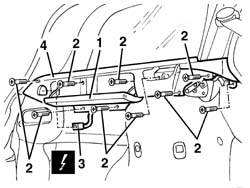

7040B30 l/h or r/h side support (one) for load platform cover blind - arrange
- Path
- Procedures > 70 FITTINGS > 7040 BODYSHELL INTERIOR TRIMS AND FITTINGS > 7040B luggage compartment and load platform trims > 7040B30 l/h or r/h side support (one) for load platform cover blind - arrange
- Kind
- repair procedure (removal / refitting; the operation number is the code)
- Applies to
- all engines; all production periods
- Interactive page
- https://sloeber94.github.io/elrnDB-a156/en/#/3238816
Applies to: all engines; all production periods; only with equipment: Station Wagon
 Removing
Removing
 Refitting
Refitting7040B22 luggage compartment/load platform moulding - r+r
7040B15 (One), rear side trim mounting BRACKET left or right - R.R .
7040B28 PET transport PROTECTION and load carrying compartment COVER COMBINATION BLIND - R.R.
- 7040L44 rear compartment scuff strip - r r
7050A47 SIDE PANEL (one) for rear seat BACKREST., left or right - R.R .
1. Open the compartment.
2. Undo the bolts fixing the side support.
3. Move the side support slightly and disconnect the electrical connection (depending on the operation).
 | Name | Connector |
|---|---|---|
3 | Rear power point |
| Name | Connector |
|---|---|---|
3 | Boot courtesy light |
4. Recover the side support.

Applies to: all engines; all production periods; only with equipment: Station Wagon
Refitting
RemovingCheck that the side support is not damaged.
Connect the electrical connection
Position the side support and fix it using the bolts.
7050A47 SIDE PANEL (one) for rear seat BACKREST., left or right - R.R .
- 7040L44 rear compartment scuff strip - r r
7040B28 PET transport PROTECTION and load carrying compartment COVER COMBINATION BLIND - R.R.
7040B15 (One), rear side trim mounting BRACKET left or right - R.R .
Topics linked from this page (6)
- 7040B15 (One), rear side trim mounting BRACKET left or right - R.R .
- 7040B22 luggage compartment/load platform moulding - r+r
- 7040B28 PET transport PROTECTION and load carrying compartment COVER COMBINATION BLIND - R.R.
- 7050A47 SIDE PANEL (one) for rear seat BACKREST., left or right - R.R .
- G40 Boot courtesy light
- P52 Rear power point
Topics that link to this page (15)
- 5580E30 receiver for car alarm remote control - r r
- 7015B44 tail gate catch control cable - r+r
- 7025C32 fuel filler flap catch control - r+r
- 7035C10 Third SIDE WINDOW (one), left or right (bonded type) - R.R. - Includes. cleaning edges of window and housing in bodyshell
- 7035C14 fixed rear side window one lh or rh r r includes cleaning of housing
- 7040B32 LOCK STRIKER for COMBINED BLIND COVERING load carrying compartment and PET transporter PROTECTION (one), left or right - R.R.
- 7040H10 roof panel lining - r r
- 7040H16 roof panel lining - r r
- 7040H42 rear pillar trim - r r
- 7040H62 rear window surround trim one lh or rh r r
- 7065B10 l/h or r/h rear safety belt (one) - r+r
- 7065B28 Rear seat belt HEIGHT ADJUSTER , (one), left or right - R.R.
- 7065B40 Rear seat belt reel mounting BRACKET , (one), left or right - R.R .
- 7095B66 TAILGATE LEFT integrated WIRING - R.R.
- 7095B68 TAILGATE RIGHT incorporated WIRING - R.R.